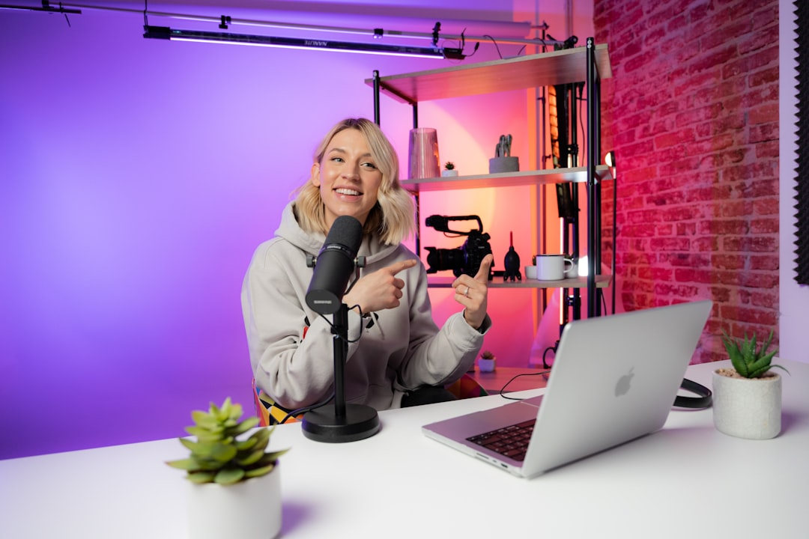

Ottimizza i Costi e i Tempi di Produzione Video UGC con Vision UGC: La Rivoluzione per E-Commerce Manager, Media Buyer e Brand

Soluzioni avanzate per la produzione di video UGC: un alleato strategico per E-Commerce Manager, Media Buyer, Brand e Agenzie di Marketing
- I costi e i tempi di produzione video UGC tradizionale rappresentano un grave ostacolo per il business digitale.
- L’adozione di tecnologie di attori digitali iper-realistici riduce radicalmente i costi e velocizza il time-to-market.
- Vision UGC di RM Studio, con Seedance 2.0, è la soluzione innovativa per generare video UGC efficaci in 24 ore a partire dal solo link prodotto.
Analisi approfondita della notizia e delle implicazioni operative
Nel panorama attuale dell’e-commerce e del marketing digitale, i contenuti video generati dagli utenti (User Generated Content - UGC) rappresentano uno strumento cruciale per aumentare la credibilità e l’engagement dei brand. Tuttavia, la creazione di video UGC tradizionale comporta lunghi tempi di produzione, costi elevati legati ai creator umani, e spesso risultati variabili in termini di qualità e impatto commerciale.
Le agenzie di marketing e i manager dell'e-commerce si trovano a dover gestire processi articolati: ricerca di creator idonei, gestione logistica di invio campioni fisici, registrazioni spesso complesse e integrazione dei contenuti in strategie omni-channel. Questi passaggi possono durare settimane, rallentando campagne promozionali e incidendo direttamente sul ROI.
Le conseguenze e i costi di non agire
Ignorare queste inefficienze comporta una serie di conseguenze negative: i costi esorbitanti dei creator umani erodono i margini di profitto, mentre le settimane perse in attesa della produzione rallentano l’agilità del brand nel rispondere alle esigenze di mercato. Inoltre, molti video prodotti con metodi tradizionali spesso non generano il ritorno atteso, con un impatto limitato sulle conversioni e sulla percezione del brand.
Questi problemi si amplificano in un contesto competitivo sempre più esigente, dove i tempi di risposta rapidi e la capacità di testare molti messaggi creativi rappresentano un vantaggio competitivo strategico. Senza una soluzione tecnologica efficiente, i team rischiano di restare ancorati a processi costosi e poco scalabili.
Come Vision UGC risolve il problema
Vision UGC di RM Studio introduce una rivoluzione nella produzione di video UGC, sfruttando attori e modelle digitali iper-realistici basati su Seedance 2.0. Questa tecnologia consente di creare video autentici e coinvolgenti con dizione perfetta entro 24 ore, partendo esclusivamente dal link del prodotto e senza l’intervento umano diretto nel processo di registrazione.
Con Vision UGC, Media Buyer e Marketing Manager possono:
- Eliminare i costi elevati legati all’ingaggio di creator umani.
- Ridurre drasticamente i tempi di produzione, passando dalla settimana a sole 24 ore di turnaround.
- Contare su video personalizzati e di alta qualità, fruibili in formati verticali ideali per social media.
Inoltre, la soluzione permette di testare rapidamente diversi ganci creativi grazie al Pro Bundle, composto da tre video diversificati, ottimizzando le campagne e massimizzando il ritorno sull’investimento pubblicitario.
| Aspetto | Gestione Tradizionale | Con Vision UGC |
|---|---|---|
| Costi di produzione | Elevati, variabili e spesso non prevedibili | Solidi e accessibili (es. Starter Pack €50, Pro Bundle €120) |
| Tempi di realizzazione | Settimane, tra spedizioni e registrazione | 24 ore dalla ricezione del link prodotto |
| Qualità contenuto video | Variabile, spesso poco controllabile | Attori digitali realistici con dizione perfetta |
| Scalabilità e test creativi | Limitata, alta complessità organizzativa | Massima flessibilità con varianti rapide |
| Integrazione workflow marketing | Dispendioso e manuale | Diretto, efficiente e digitale |
💡 Ti è stato utile questo approfondimento?
Condividilo con un collega o un amico del settore E-Commerce Manager, Media Buyer, Brand e Agenzie di Marketing a cui potrebbe interessare!
FAQ - Domande Frequenti su Vision UGC e produzione video digitale
1. Quanto è affidabile la qualità dei video prodotti con Vision UGC?
La tecnologia Seedance 2.0 permette di creare attori digitali iper-realistici con dizione perfetta, garantendo video di qualità professionale adatti a tutte le piattaforme social.
2. È possibile personalizzare i video con varianti creative?
Sì, il Pro Bundle consente di generare fino a tre diversi ganci creativi, facilitando test A/B rapidi e ottimizzati per massimizzare l’efficacia delle campagne.
3. Come si integra Vision UGC nel workflow di un team marketing?
Essendo una soluzione SaaS nativa digitale, Vision UGC si integra facilmente nei flussi di lavoro esistenti, eliminando la necessità di gestire spedizioni o produzioni manuali.
Inizia Subito
Starter Pack a €50 o Pro Bundle (3 ganci creativi) a €120.
Fonti Ufficiali e Risorse Esterne
Scopri l'Intelligenza Artificiale per la tua attività
Ottimizza i processi e aumenta le vendite con le soluzioni B2B di RM Studio.
Scopri Vision UGC